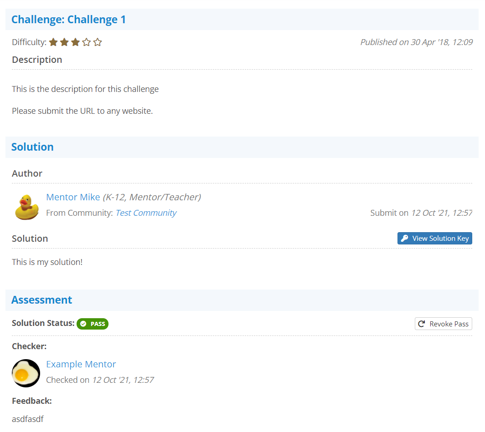

Accessing a Solution
You may access a particular solution from your history by simply clicking on it:

The Left Side Panel
When you are inside a solution, you will have a left side panel that gives some quick information about the solution you are looking at:

If this solution feedback has been audited by one of your community group's admins, and they have left a note with the audit, it will also appear in the left panel below the overview information:

The History Solution View
Visually, the history solution view looks just like you were checking the solution:

The key difference is that the Check section is replaced with the Assessment section. Here you can see when you checked the solution, what your feedback was, and if you passed this solution, revoke it:
Revoking a Pass
If you ever accidentally pass a solution that should have failed, you may revoke the pass at any time, provided the student you are revoking the pass from is still a valid member of the community the solution was submitted in:
This will open a window where you are required to give a reason to the student why their pass is being revoked. Please note the message at the bottom of this window: This will also revoke the badge from the student if the badge was earned in the community you are revoking the pass credit from:

The student will be sent a notification that their pass has been revoked, and this information will now appear below the original feedback in the history view: